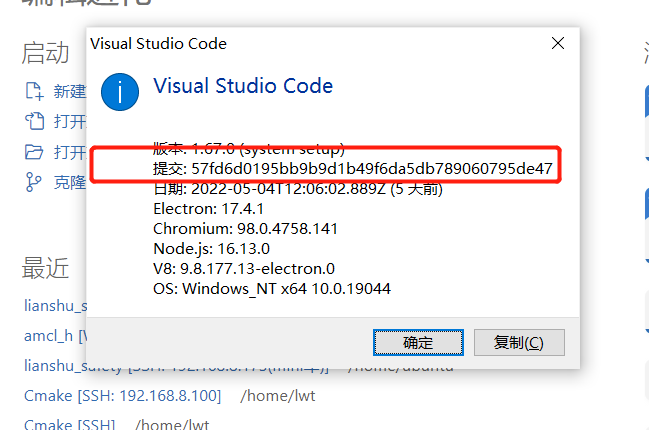
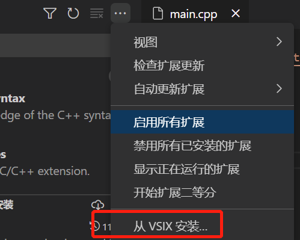

一、.vscode的配置
c_cpp_properties.json
ctrl+shift+p ,运行C/Cpp: Edit configurations...
{
"configurations": [
{
"name": "linux",
"includePath": [
"/opt/ros/melodic/include",
"/usr/include",
"${workspaceFolder}/**",
"${workspaceFolder}/devel/include"
],
"intelliSenseMode": "linux-gcc-x64",
"compilerPath": "/usr/bin/gcc",
"cppStandard": "c++17",
"cStandard": "c17"
}
],
"version": 4
}
tasks.json
ctrl+shift+p ,运行task
{
// See https://go.microsoft.com/fwlink/?LinkId=733558
// for the documentation about the tasks.json format
"version": "2.0.0",
"tasks": [
/*1. mkdir build*/
{
"label": "mkdir build",
"type": "shell",
"command": "mkdir",
"args": [
"-p",
"build"
],
"options": {"cwd": "${workspaceFolder}"},
"group": "build",
},
/*2. cmake ..*/
{
"label": "cmake ..",
"type": "shell",
"command": "cmake",
"args": [
".."
],
"options": {
"cwd": "${workspaceFolder}/build",
},
"group": "build",
"dependsOn":[
"mkdir build",//表示在"创建build"任务结束后进行
]
},
/*3. make */
{
"label": "make",
"type": "shell",
"command": "make",
"args": [
""
],
"group": "build",
"dependsOn":[
"cmake ..",//表示在"创建build"任务结束后进行
],
"presentation": {//配置用于显示任务输出并读取其输入的面板
"echo": true,
"reveal": "never",
"focus": false,
"panel": "shared",
"showReuseMessage": true,
"clear": false
},
"options": {"cwd": "${workspaceFolder}/build"},
}
]
}
预定义变量名字
${workspaceFolder} - 当前工作目录(根目录)
${workspaceFolderBasename} - 当前文件的父目录
${file} - 当前打开的文件名(完整路径)
${relativeFile} - 当前根目录到当前打开文件的相对路径(包括文件名)
${relativeFileDirname} - 当前根目录到当前打开文件的相对路径(不包括文件名)
${fileBasename} - 当前打开的文件名(包括扩展名)
${fileBasenameNoExtension} - 当前打开的文件名(不包括扩展名)
${fileDirname} - 当前打开文件的目录
${fileExtname} - 当前打开文件的扩展名
${cwd} - 启动时task工作的目录
${lineNumber} - 当前激活文件所选行
${selectedText} - 当前激活文件中所选择的文本
${execPath} - vscode执行文件所在的目录
${defaultBuildTask} - 默认编译任务(build task)的名字
二、离线使用remote ssh
参考链接
VS Code Server的离线安装过程 - 知乎 (zhihu.com)
准备工作
1 确定vscode的commit id
点击帮助–>关于

2 观察并记录commit id 号
版本: 1.67.0 (system setup) 提交: 57fd6d0195bb9b9d1b49f6da5db789060795de47 日期: 2022-05-04T12:06:02.889Z Electron: 17.4.1 Chromium: 98.0.4758.141 Node.js: 16.13.0 V8: 9.8.177.13-electron.0 OS: Windows_NT x64 10.0.19044
3 下载远程连接机器的安装包
用2中的内容替换${commit id}
#arm64
https://update.code.visualstudio.com/commit:${commit id}/server-linux-arm64/stable
#x64
https://update.code.visualstudio.com/commit:${commit id}/server-linux-x64/stable
#armhf
https://update.code.visualstudio.com/commit:${commit id}/server-linux-armhf/stable
安装工作
1 进入要连接的机器上，创建文件夹
mkdir -p $HOME/.vscode-server/bin
2 将下载包拷贝进$HOME/.vscode-server/bin目录下
3 解压
cd $HOME/.vscode-server/bin
tar -zxvf vscode-server-linux-armhf.tar.gz
rm -rf vscode-server-linux-armhf.tar.gz
4 重命名
mv vscode-server-linux-armhf ${commit id}
替换为具体的id
mv vscode-server-linux-armhf 57fd6d0195bb9b9d1b49f6da5db789060795de47
5 改权限
cd $HOME/.vscode-server/bin
chmod -R 775 ${commit id}
即
chmod -R 775 57fd6d0195bb9b9d1b49f6da5db789060795de47
6 连接
使用vscode远程连接
other
如果需要插件，找到一个类似的机器，在上面联网安装，安装后的插件在$HOME/.vscode-server/extensions下，直接打包拷贝到离线机器人相同目录就可以了。
用win上的拷贝也可以

三、clangd–智能提示
以ubuntu为例，需要先在ubuntu中安装
sudo apt install llvm clangd lldb
再在打开vscode，下载两款插件 clangd 和 codelldb

其中CodeLLDB可能会下载不成功，可以从vsix安装

四、vscode-icons–图标显示

五、NeoVim–编辑器
在wsl中下载neovim
sudo apt install neovim
修改neovim插件的配置